DAVID G. SIMPSON
Personal Web Site
JAPAN PHOTO ALBUM: PAGE 2
| 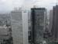 Another view from the top of the Tokyo Metropolitan Government Building. |
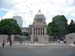 The National Diet in Tokyo. This is where the Japanese legislature meets (analogous to our U.S. Capitol Building). |
|
| 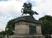 We next went to visit the grounds of the Imperial Palace of Japan (Kōkyo). Here on the palace grounds is a statue of a famous 14th-century samurai, Kusunoki Masashige. |
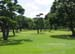 Gardens near the Imperial Palace. |
|
| 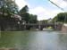 The famous Nijubashi Bridge on the grounds of the Imperial Palace. The is the main entrance to the Imperial Palace, the Emperor's residence. We were told by the tour guide that this is called the "double bridge" not because of the two spans, but because of there is a second bridge behind this one (not visible in this picture). |
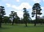 Another view of the gardens at the Imperial Palace. |
|
| 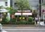 Leaving the Imperial Palace, we headed toward a temple area in another part of town. They have McDonald's in Tokyo too. Notice the signs for something called "Mega Mac" and "McPork". |
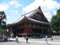 Sensō-ji, and ancient Buddhist temple and the oldest temple in Tokyo. The temple was build in A.D. 645. |
|
| 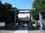 Entrance to the Asakusa Shrine, a Shinto shrine adjacent to the Buddhist Sensō-ji temple. Our tour guide told us that it was common for Buddhist and Shinto temples to co-exist like this. |
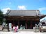 The Shinto Asakusa Shrine. |
|
| 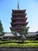 A five-story pagoda near the Sensō-ji temple. |
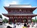 A large gateway on the grounds of the Sensō-ji temple. On the other side of this gateway is a large array of little shops, selling all sorts of wares. |
{kind=link}
{kind=link}
{kind=link}
{kind=link}
{kind=link}
{kind=link}
{kind=link}
{kind=link}
{kind=link}
{kind=link}
{kind=link}
{kind=link}
| <<< Previous | Page 2 of 4 | Next >>> |
|---|
Contact Information
I may be contacted at: